Úprava montáže nástroje
Po kliknutí na montáž nástroje se zobrazí panel Montáž ohýbání, který lze použít k úpravě různých nastavení montáže ohýbání a k provedení několika operací.
Panel Montáž ohýbání
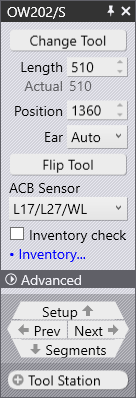
Panel Montáž ohýbání vypadá jako na obrázku vedle. Přesná nastavení a operace se budou lišit v závislosti na tom, zda kliknete na razník, matrici nebo montáž adaptéru. Kromě toho mohou být některá nastavení dostupná nebo nedostupná v závislosti na možnostech stroje.
-
Kliknutím na tlačítko Změna typu nástroje nahradíte nástroj použitý pro vybranou montáž jiným nástrojem. (Více informací o voliči nástrojů, který se používá k výběru náhradního nástroje, naleznete v následující části).
-
Vstup Délka se používá k nastavení délky stanice. Když sem zadáte novou hodnotu, TecZone Bend znovu sestaví stanici pomocí vhodné sady segmentů, aby se co nejvíce přiblížil požadované délce. Segmenty, které se používají, můžete zkontrolovat vizuálně podle obrysových čar segmentů zobrazených na montáži ohýbání.
-
Vstup Poloha se používá k nastavení polohy levé hrany montáže podél stolu nebo nosníku stroje. Polohu lze také upravit přetažením montáže doleva nebo doprava. (Viz níže uvedená část o přetahování montáže).
-
Volič Rohový nástroj (zobrazený pouze pro montáže razníku) lze použít k donucení TecZone Bend k použití levého a/nebo pravého ucha[1] díly v kompozici).
-
Otočení nástroje slouží k zrcadlení nástroje (zepředu dozadu). Zobrazí se při úpravách montáže, která používá asymetrický nástroj (například nástroj typu husí krk). Operace zrcadlení je dostatečně inteligentní, aby zjistila, zda je třeba zrcadlit další držáky a nástroje, aby byla zachována shodnost. Například na obrázku níže zrcadlení razníku OW_Z4 (používaného pro Z-ohyb) také zrcadlí matrici, držák a dokonce i díl, aby byla zachována shodnost procesu:
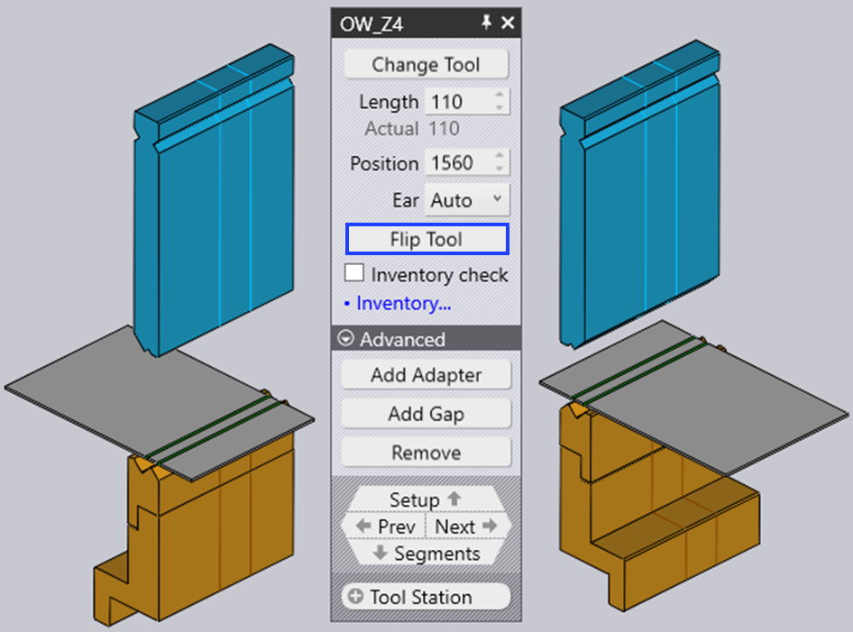
-
Přidání adaptéru slouží k přidání prodloužení pro zvýšení výšky razníku nebo matrice. Po přidání adaptéru se tento adaptér označí a zobrazí se panel pro tento adaptér (to vám umožní změnit aktuálně používaný adaptér nebo jej odebrat).
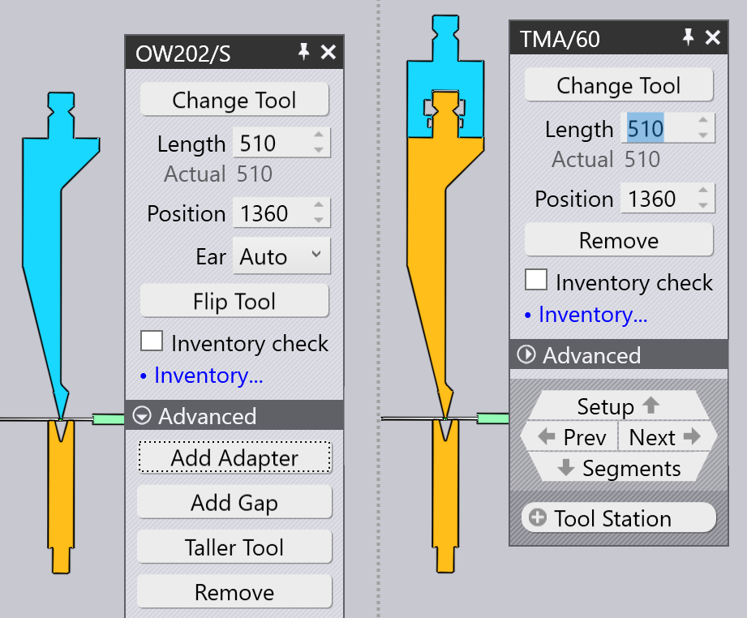
-
Vložit spáru slouží k přidání mezery do montáže nástroje, aby mohla příruba projít bez kolizí (více informací o tom najdete v části níže Přidání mezery).
-
Vel. výška nástroje se používá k nahrazení vybraných nástrojů jinými vyššími nástroji ze stejné rodiny.
-
Kliknutím na Odstranit odstraníte montáž nástroje. V navigátoru ohýbání se u ohybů, které používají tuto stanici, zobrazí chyba chybějícího razníku nebo chybějící matrice, kterou lze opravit pomocí tlačítka Přidat na příkazové liště vlevo a přidáním nové montáže.
-
Volič Senzorový nástroj se používá k přepínání mezi různými dvojicemi dotykových kotoučů ACB, které lze pro tento díl použít. Výběr závisí na tloušťce plechu a použitém razníku.
-
Pokud je zaškrtávací políčko Kontrola počtu kusů zaškrtnuto, použité segmenty se porovnávají s dostupným inventářem dílů (který lze upravit kliknutím na odkaz Správa nástroje). Pokud jsou použity segmenty, které nejsou v inventáři, je na ně nakreslen speciální trojlístkový symbol, jak můžete vidět na obrázku níže u 40mm a 45mm kusů poblíž středu razníku níže:
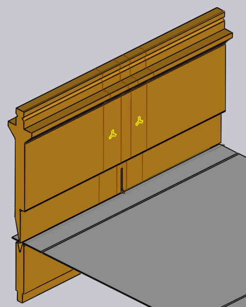
Při úpravě montáže nástroje pomocí některého z těchto nastavení a operací TecZone Bend okamžitě ověří stav všech procesů ohýbání a provede různé kontroly, jako je kolize, použitelnost nástroje atd. Stav navigátoru ohýbání se aktualizuje okamžitě a v reálném čase, což velmi usnadňuje experimentování s různými nastaveními s okamžitou a přesnou zpětnou vazbou.
Okno Výměna nástroje
Po kliknutí na tlačítko Změna typu nástroje se zobrazí okno Výměna nástroje:

V tomto okně se zobrazí všechny dostupné náhradní nástroje.
-
Pomocí hierarchie vlevo můžete zúžit výběr – například můžete zvolit zobrazení pouze nástrojů s husím krkem, aby byl výběr snazší.
-
Pomocí voliče Seřadit v horní části můžete nástroje seřadit podle názvu, výšky, poloměru nebo jiných kritérií (přesná sada kritérií závisí na tom, zda vyměňujete razník, matrici nebo adaptér).
-
Do pole Hledat můžete zadat název nástroje (nebo zkrácený název) a rychle tak zúžit seznam. Zadání částečného názvu nástroje je také v pořádku – použití OW200 například vyhledá nástroje OW200, OW200/S i OW200/K.
-
Pomocí posuvníku Měřítko upravte velikost obrázků nástrojů. Nástroj, který se v současné době používá, má modrou výplň a silný obrys. Světle modré šrafování označuje další nástroje, které se v této části používají.
-
Vypněte zaškrtávací políčko Filtr, abyste měli neomezený přehled o všech nástrojích (bez ohledu na to, zda jsou vhodné či nikoli). V tomto zobrazení jsou nástroje, které nejsou vhodné, šedé a po najetí myší na jeden z těchto nástrojů se zobrazí důvod, proč není k dispozici pro výběr:
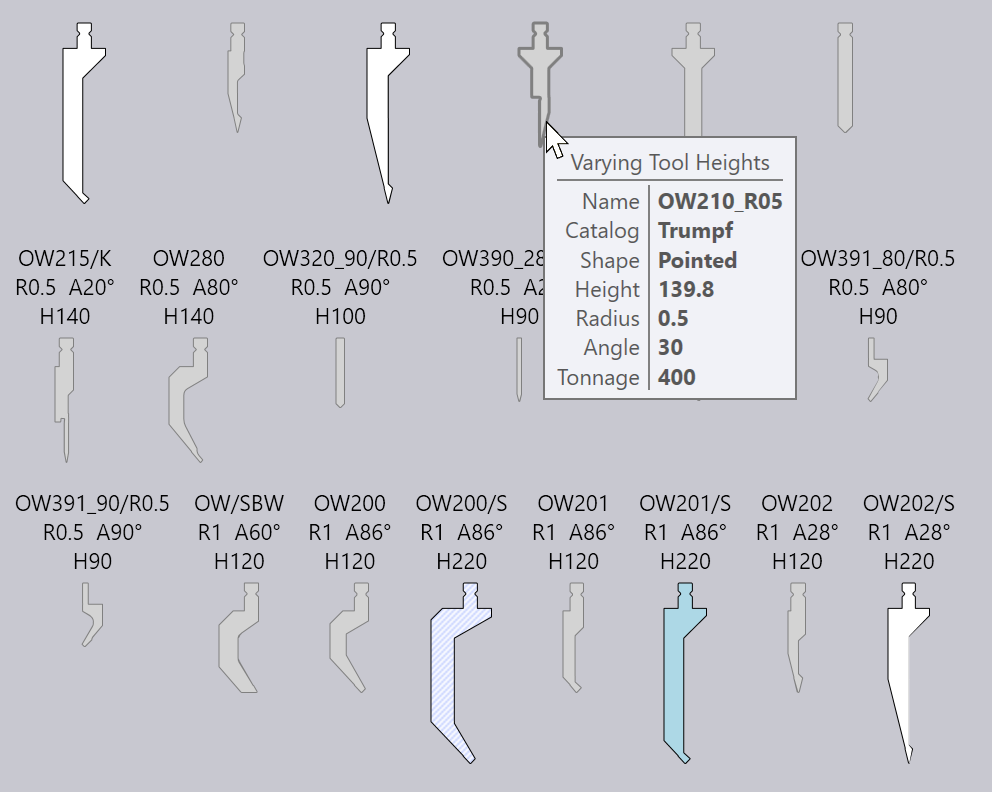
Při pohybu myší nad obrázky nástrojů TecZone Bend okamžitě přepočítá vybrané nástrojové montáže s použitím nově vybraného nástroje a v reálném čase můžete vidět, zda nástroj, který zvažujete, způsobí nějaké kolizní problémy ( odpovídající ohyby v navigátoru ohýbání se okamžitě rozsvítí červeně, pokud dojde ke kolizi). Díky náhledu v reálném čase můžete snadno experimentovat s různými nástroji, dokud nenajdete ten, který vám vyhovuje.
Pokud kliknete na jeden z nástrojů, výběr je proveden a nový nástroj je aplikován na díl. Pokud místo toho stisknete Esc, provedené volby náhledu se vrátí zpět a původní nástroj zůstane beze změny.
Navigace a výběr
Panel montáže ohýbání zobrazuje různá tlačítka v navigačních a výběrových podpanelech.
-
Pomocí navigačního tlačítka Upnutí přejděte k úpravám celého nastavení ohybu. Více informací o tom najdete na stránce editoru nastavení.
-
Pomocí tlačítek Zpět a Další můžete procházet úpravy různých nástrojových montáží v tomto nastavení.
-
Pomocí navigačního tlačítka Segmenty se přesuňte o jednu úroveň níže a upravte jednotlivé segmenty, které tvoří tuto montáž. Více informací o tomto tématu naleznete v následující části věnované úpravám segmentů nástrojové montáže.
-
Pomocí voliče Nástrojová stanice vyberte všechny montáže nástrojů, které tvoří tuto stanici. Tím se vyberou všechny razníky, matrice a držáky, které jsou přiřazeny vybrané montáži, takže je lze všechny společně upravovat nebo přesouvat.
-
Pomocí voliče Stejný nástroj vyberte další montáže nástrojů, které používají stejný nástroj. To je často užitečné před použitím operace výměny nástroje; výběr všech stanic pomocí zadaného nástroje rozšiřuje dostupný výběr náhradních nástrojů.[2]
Úprava více montáží
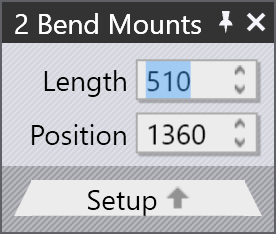
Pokud vyberete více montáží pomocí Shift+kliknutí na všechny, lze je upravovat společně. K dispozici jsou pouze nastavení a operace, které jsou společné pro všechny montáže.
Pole jako Délka nebo Poloha se zobrazují pro úpravu pouze v případě, že jsou stejná pro všechny montáže.
Pokud máte více stanic, je užitečné před provedením operace Výměna nástroje vybrat všechny razníky nebo všechny matrice. V tomto případě je výběr dostupných náhradních nástrojů širší (protože nehrozí nebezpečí kolize razníků a matric různé výšky).
Přetažení montáže ohýbacího nástroje
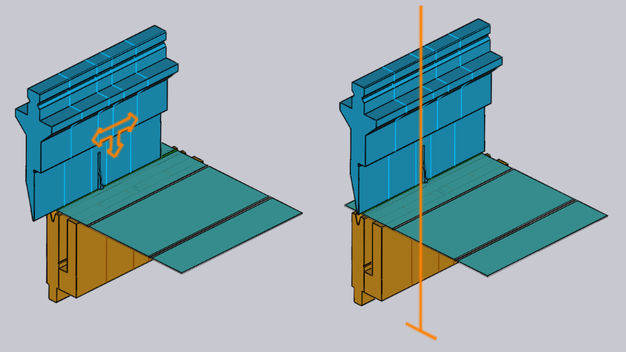
Vstup Poloha lze použít k nastavení přesné polohy pro montáž. Někdy je jednodušší pouze přetáhnout montáž ohýbání na nové místo. Postupujte takto:
-
Kliknutím na montáž ohýbání ji vyberte (výběrem více montáží pomocí Shift+kliknutí)
-
Klikněte a začněte táhnout doleva/doprava, abyste přesunuli vybranou montáž.
Jak ukazuje obrázek výše, když přesunete myš nad vybranou montáž, zobrazí se šipka, která označuje, že můžete vybranou montáž přetáhnout. Při přetahování montáže vám indikátory přichycení umožňují snadno zarovnat montáž s ostatními existujícími montážemi.
Pokud uchopíte montáž blízko jejího levého okraje, pak se pro přichycení použijí levé okraje všech montáží. Pokud uchopíte montáž za střed, použije se pro přichycení středová čára atd.
Pokročilé operace
Zde je několik pokročilejších operací s panelem editoru montáže ohýbání.
Úprava segmentů montáže nástroje
Kliknutím na navigační tlačítko Segmenty při úpravě montáže ohýbacího nástroje
se otevře panel Segment nástroje, který vypadá jako na obrázku vedle.
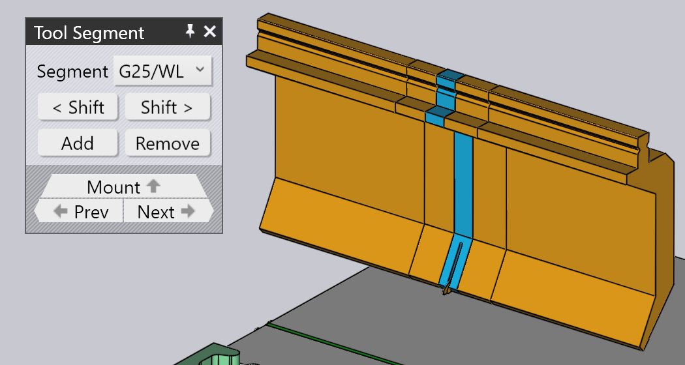
-
Volič Nástroj se používá k nahrazení vybraného segmentu nástroje delším nebo kratším kusem, případně kusem jiného typu.
-
Tlačítka < Posun a Posun> slouží k posunutí vybraného segmentu v kompozici doleva nebo doprava. Tím se nezmění celková délka kompozice, ale je to užitečné pro posun senzoru dorážení doleva nebo doprava, například aby se vyhnul otvorům.
-
Tlačítka Přidat a Odstranit slouží k přidání nových segmentů do kompozice nebo k odstranění vybraného segmentu.
-
Navigační tlačítka Zpět a Další slouží k procházení úpravami různých segmentů montáže ohýbání. Jak ukazuje obrázek výše, upravovaný segment nástroje je zvýrazněn modře.
-
Navigační tlačítko Vybavit slouží k přesunu o jednu úroveň výše a úpravě celé montáže ohýbání, nikoli jednotlivých segmentů.
Přidání mezery do montáže
Někdy je užitečné přidat do montáže nástroje úzkou mezeru, obvykle aby bylo možné projít přírubou bez kolize. K tomu klikněte na tlačítko Vložit spáru (které se zobrazí, pokud je nástroj dostatečně dlouhý). V panelu se otevře malá sekce s řadou vzájemně propojených vstupů pro nastavení levého okraje, pravého okraje a skutečné mezery. Jelikož součet těchto tří hodnot musí odpovídat délce nástrojové montáže, úpravou dvou z nich se automaticky nastaví i třetí.
Níže uvedený obrázek znázorňuje tuto operaci v průběhu. Máme přírubu, která koliduje
s razníkem, a upravujeme levý/pravý okraj, dokud se navrhovaná mezera
nesrovná s místem, kde se příruba protíná s razníkem (navrhovanou mezeru můžete vidět
zobrazenou jako dvě oranžové čáry nakreslené na montáži ohýbání). 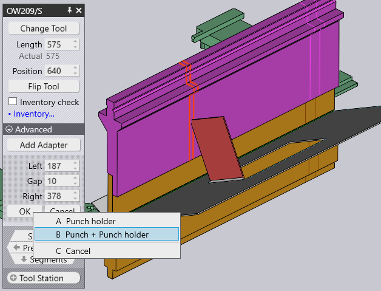
Po kliknutí na tlačítko OK v tomto podokně se vytvoří mezera a můžete vidět,
že chyba kolize je nyní vyřešena: 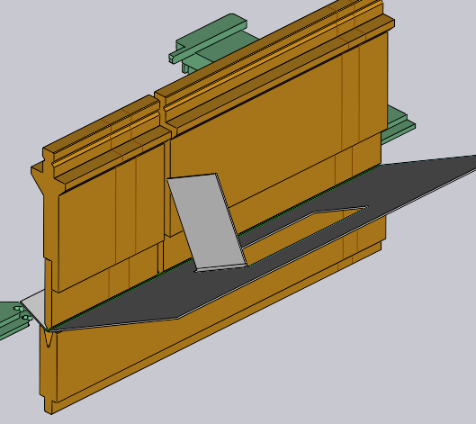
| Při úpravě stanice, která používá držák razníku, se TecZone Bend zeptá, zda má být mezera vložena pouze pro razník, nebo pro razník i držák. |
Použití dvojitého V-adaptéru
Je možné použít dvojitý V-adaptér pro montáž dvou matric vedle sebe. Chcete-li to provést ručně, použijte tlačítko Přidání adaptéru pro přidání adaptéru k matrici a poté použijte tlačítko Změna typu nástroje pro změnu tohoto adaptéru na dvojitý V-adaptér. Nyní je možné přidat druhou matrici do druhého slotu dvojitého V-adaptéru pomocí příkazu Přidat z příkazového řádku a výběrem montáže matrice.
Když máte matrici namontovanou v jednom slotu dvojitého V-držáku, můžete ji přesunout do
druhého slotu kliknutím na zobrazené tlačítko Změna osy I: 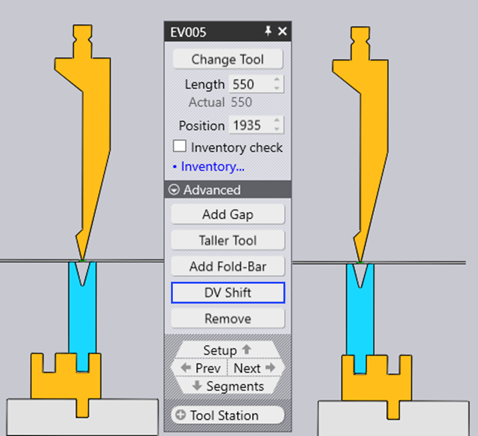